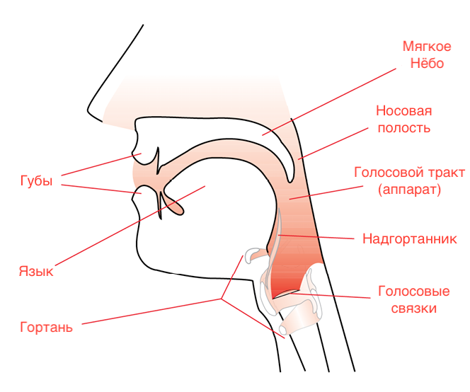

COMPLETE VOCAL INSTITUTE ™
Крупнейший институт Эвропы для продвинутых и профессиональных вокалистов.
Complete Vocal Technique
Пение не такое сложное как всем кажеться и каждый может научиться. Я разделил елементы исользуемые при пение на 4 основных группы как показано ниже. Соеденяя елемнты каждых из этих четырех инструментов, вы можете добиться именно того звучания, которого вы хотите. Вы так же сможете определить проблемы и ошибки, и выбать, на какие техники вы хочете уделить больше времени.
Четыре основных инструмента:
- Три общих принципа – обеспечит здоровое звуко-извлечение.
- Четеыре вокальных режима – помогут выбрать ‘настройку’ в которой вы хотите петь.
- Звуковые окраски – помогут дать характрность вашему звуку.
- Эффкты – помогут достичь определенного звукового эффекта.
Три Общих Принципа
Этих три общих принципа — основа основ, и важно их постоянно совершенствовать. Именно они позволяют нам достичь всех тех высоких и низких нот в диопазоне каждого индивидуома, петь долгие фразы, иметь чистый и сильный голос и избежать хрипоты в голосе.
Эти три общих принципа должны быть соблюдены в независимости от вокальной техники, окраса или эффекта, и это:
1. Диофрагмовая поддержка
<<<<<<< HEADЭто значить работать против натурального желания диофрагмы выпустить воздух. Оно достигаеться сопротивлением: Во время пения, мышцы талии и солнечного сплетения выталкнены наружу, в то время как мышцы живота, вокруг пупка, ранвномерно и постепенно подтягиваются, and the back muscles are tightened. The muscles in the loin try to pull the pelvis backwards, while the muscles in the abdomen try to pull the pelvis up under your body.
This battle created between the abdominal muscles and the muscles in the loin is a valuable and important part of support. However, the support must happen in a sustained and continuous manner as though working against a resistance for as long as a sound is being produced. When the muscle contractions stop being sustained and continuous, for instance if you cannot pull the abdomen around the navel inwards any further or push the muscles of the waist or solar plexus outwards any further, then there is usually no more support.
=======Это значить работать против натурального желания диофрагмы выпустить воздух. Оно достигаеться сопротивлением: Во время пения, мышцы талии и солнечного сплетения должны быть выталкнены наружу, в то время как мышцы вокруг пупка постепенно и равномерно втягиваются, а мышцы спины натягиваются. Мышцы поясницы пытаются подтянуть таз назад, а мышцы живота пытаются его подтянуть под ваше тело.
Это наприжение между мышцами живота и мышцами поясной кишки и создает ту самую поддержку, которая так важна для правильного звуко-извлечения. Однако, эта поддержка должна быть постоянно-непрерывной, словно вы работаете против какого-то условного сопротивления на протжение всего времени, пока вы издаёте звук. When the muscle contractions stop being sustained and continuous, for instance if you cannot pull the abdomen around the navel inwards any further or push the muscles of the waist or solar plexus outwards any further, then there is usually no more support.
>>>>>>> ba924668941f35ae87e84df561075fab903c5e5dIt is important to conserve your support energy so you do not waste it or use it at the wrong point in time. Do not use support energy before it is necessary. Save it for when the singing gets difficult, such as on high notes or at the end of a phrase. Support work is hard physical work so you should be in good physical condition.
2. Necessary Twang
The area above the vocal cords forms a funnel; this is called the ‘epiglottic funnel’. When twanging, the epiglottic funnel is narrowed. The narrowing of the epiglottic funnel can be performed in various ways from the lowest part of the funnel to the rim of the funnel. As a result, the sound gets clearer and non-breathy, and you can increase your volume. You always need to use necessary twang, especially on metallic modes, in order to have correct technique and achieve easy and unhindered use of the voice regardless of the sound colour and effect used. Necessary twang makes it easier to sing in all ways. For many, this necessary twang does not sound twanged at all.
3. Avoid protruding the jaw and tightening the lips
Avoid protruding the jaw and tightening the lips, as it might trigger uncontrolled constriction, especially in the high part of the voice. Achieve a correct jaw position by bending your head back and placing a finger between the upper and lower jaw. Keep this position of the jaw as you sing. The lower jaw should be pulled backwards relative to the upper jaw. Be sure to open the mouth wider on high and low notes than on notes in the middle part of the voice.
Whilst avoiding tightening the lips, it is also important to form vowels with the tongue without altering the shape of the mouth too much. Consonants on the other hand are usually produced by narrowing the vocal tract and by tension in the lips, but as you do not stay on them for very long in singing, they do not impair singing. It is important to be able to release the tension immediately going from consonants to vowels.
The four vocal modes
There are two levels when working with the modes: the foundation level looking at the modes and the metal; and the advanced level, looking at the density of the modes. You can easily use the vocal modes without getting into their densities. When nothing is stated about the density, it is implied that the density is fuller.
The foundation level: Metal
The use of the voice can be divided into four vocal modes: Neutral, Curbing, Overdrive and Edge. The modes differ by having different amounts of metal and different characters. The modes also have individual advantages and disadvantages in relation to pitch, volume, vowels and sound colours. Most singing problems occur because of incorrect use of the modes. Each mode has a certain character, as well as advantages and limitations. It is important to know and control the modes to benefit from the advantages and to avoid the limitations. It is also important to be able to change freely between the modes in order to make the most of their advantages when singing and avoid their limitations. You can change smoothly, or make abrupt changes to achieve vocal breaks. Each of the four vocal modes should be trained individually and in different ways. Remember to obey the three overall principles regardless of the mode.
Neutral
Definition for Neutral (foundation level)
- Neutral is the non-metallic mode, containing 0% of metal.
- The character of Neutral is clear, open, soft and non-metallic.
Neutral is a very extensive mode that contains many different sounds and sound colours. The sounds are softer and milder than the metallic modes. When starting out, Neutral can be found by establishing a loose jaw.
The Neutral mode has through time also been called classical, but this is misleading, as classical singing just as often uses the metallic modes. Neutral is also used when singing popular music. Therefore, I have chosen the name Neutral to describe the mode, because I felt the mode needed a more unbiased, neutral term.
Neutral
Female — Neutral
Male — Neutral
All parts of the voice, all vowels, and all sound colours can be used in Neutral by both men and women.
Neutral is limited by volume. In general, it is a quiet mode, from volume 1- 4 out of 10, From very quiet (‘pp’ or ‘pianissimo’) to medium quiet (‘mp’ or ‘mezzo piano’), but there are exceptions. It is possible to obtain greater volumes in Neutral than in Neutral with audible air. Very loud volumes, volumes 7-10 out of 10 (‘ff’ or ‘fortissimo’), can be obtained in Neutral in the high part of the voice (from C5 upwards for women and C4 upwards for men). Medium volume, 4-7 out of 10 (medium quiet to medium loud) is also possible in Neutral when more twang is added to the sound.
In the western world, Neutral is normally the mode in which women start getting singing tuition. This is most likely because many people have been brought up truely believing that the soft and mild character of Neutral is the most healthy, and therefore best suited.
The Neutral mode is the only mode where you as an effect can add audible air. You can add different amounts of audible air, from very little to a great deal, meaning that you can sing in Neutral with all amounts of audible air, from notes without any audible air at all to notes that are soft and breathy. In general we talk about ‘Neutral’, but if audible air is added to the mode as an effect, it is called ‘Neutral with audible air’. For clarity, ‘Neutral and ‘Neutral with audible air’ are sometimes shown separately, as they have different rules and possibilities.
Neutral with audible air
Female — Neutral
Male — Neutral
Both classical male and female singers use Neutral without any audible air when singing quietly (pp-mp) in their entire range, for example in connection with thinning (decrescendo) and singing in pianissimo. Women use Neutral without any audible air in classical singing in all volumes in the high part of their voice. Men use Neutral without any audible air in classical singing when singing medium to loud (mf-ff) volume with a non-metallic character in the high part of their voice.
In everyday life, Neutral is used when you speak or sing quietly.
Curbing
Definition for Curbing (foundation level)
- Curbing is reduced metallic, containing various amounts of metal, from a minimal amount, like 1%, all the way to around 50% metal
- The character of Curbing is restrained, lidded and held back.
- It can be found by establishing a light ‘hold’.
The character of Curbing is restrained. The sound could be described as slightly plaintive, lidded, held-back, or restrained.
Curbing can be found by establishing a light ‘hold’. Curbing contains various amounts of metal, from a minimal amount, like 1%, up to around 50% metal.
You cannot add audible air to the voice in Curbing; even attempting it may result in straining the voice.
To ‘Curb’ means to ‘hold’, to ‘tame’, to keep ‘under control. I have chosen the name ‘Curbing’ because it, in my opinion, describes what it might feel like to sing while holding back the sound and thereby giving it its restrained character and preventing it (or ‘curbing’ it) from becoming fuller metallic.
Men can use Curbing in all pitches, but in the low and very low part of the voice the sound becomes more and more restrained.
Women can use Curbing through all the various parts of the voice, up to the High C but again, in the low and very low part of the voice the sound becomes more and more restrained. Women cannot sing in Curbing in the very high part of the voice.
Curbing is used for artistic reasons when a singer wants to sing with a slightly plaintive, lidded, held-back and restrained character. Like when a singer sings the vowels ‘O’ (as in ‘woman’) and OO’ (as in ‘you’) in a relatively loud volume with some amount of metal.
In Curbing, you can use the vowel ‘UH’ (as in ‘hungry’). The ‘UH’ encompasses many vowel nuances as many vowels can have an ‘UH’ sound. Also, the vowels ‘O’ (as in ‘woman’) and ‘OO’ (as in ‘you’) can be used in Curbing when sung with a relatively loud volume.
Female — Curbing
Male — Curbing
Curbing largely stays in the medium volume range, from medium quiet (‘mp’ or ‘mezzo piano’) to medium loud (‘mf’ or ‘mezzo forte’). From volume 4 -7 out of 10. Very quiet (‘pp’ or ‘pianissimo’) and very loud (‘ff’ or ‘fortissimo’) volumes are not attainable in Curbing.
The sound colour can be altered extensively within Curbing.
Curbing is used in many styles of popular music (such as R & B music) when the volume is medium loud and a certain amount of restrained metal is required.
Curbing is used in classical music when singing medium loud volume (mf) with a restrained character. (The metallic character is often difficult to hear in classical singing as it is disguised by a darker sound colour). Men can use Curbing in classical singing in their entire range, when a medium loud volume and a restrained character is wanted. Women use Curbing in classical singing in the middle part, and in the lower part of the voice, when a medium loud volume and a restrained character are wanted.
Curbing is used in everyday life when you are wailing, moaning or whining.
Curbing
Definition for Overdrive (foundation level)
- Overdrive can range from reduced to full metallic, containing all possible amounts of metal, from a minimal amount, like 1%, all the way to 100% (full) metal
- The metal has a clear, open and shouty character.
The character of Overdrive is clear, often direct, unrestrained, and ‘shouty’, like when you call ‘hey’ after someone in the street. Overdrive is a mode with a non-breathy sound. When starting out, Overdrive can be found by establishing a ‘bite’.
I have chosen the name Overdrive because I find it descriptive of the direct, clear, open and loud sound you can obtain in this mode. My inspiration for the name is from the overdrive that can be found in guitar pedals and from the fifth gear in sports cars (i.e. overdrive gear).
You cannot add audible air to the voice in Overdrive; even attempting it may result in straining the voice.
In terms of pitch, Overdrive is the most limited mode. It is especially limited for women. The upper limit for women is D5 and for men C5. There is no lower limit.
In Overdrive, you can only use the vowels ‘EH’ (as in ‘stay’) and ‘OH’ (as in ‘so’).
Female — Overdrive
Male — Overdrive
The volume in Overdrive is medium loud to very loud, from volume 4 -10 out of 10. In the beginning the higher the note, the louder and more distinct the shouting character becomes, and the more distinct the difference in volume and character from Neutral and Curbing. When you have obtained a greater control over Overdrive, you can use it in medium volume where the character becomes less Overdrive-y/shouty.
The sound colour can be altered quite a bit in Overdrive.
Overdrive is the most commonly used mode for men and women in the low part of the voice and when speaking or singing loudly.
Overdrive is used in almost all styles, when singing in a low pitch, or when the volume is medium to loud and when a degree of clear metal is desired, for example in rock music.
Overdrive is used in classical music when singing medium loud to loud (mf-ff) with a clear character (the obvious metallic character is often difficult to hear as it is disguised by a darker sound colour). Men can use Overdrive in classical singing in their entire range. (Observing the pitch limit of C5). Women are mostly using Overdrive in classical singing in the lower part of the middle part and in the low part of the voice when singing medium to loud (mf-ff), for example like Maria Callas.
Overdrive is used in everyday life when you speak and sing in medium to loud volume, and loud Overdrive is used in everyday life when you talk loudly and when you are shouting.
Female — Overdrive in classical singing
Male — Overdrive in classical singing
Edge
Definition for Edge (foundation level)
- Edge can range from reduced to full metallic, containing all possible amounts of metal, from a minimal amount, like 1%, all the way to 100% (full) metal
- Distinct twang of the epiglottic funnel
- The metal has a clear, open and sharp character
The character of Edge is clear, open and could be described as direct and unrestrained, yet lighter and sharper than Overdrive. Edge has a non-breathy character. Edge can be found by maintaining a clear and open character and adding the distinct twang of the epiglottic funnel (as if imitating a duck).
You cannot add audible air to the voice in Edge; even attempting it may result in straining the voice.
I have chosen the name Edge because I find it descriptive of the bright, clear and sharp sound you can obtain in this mode.
Men can use Edge in all pitches. Women can use Edge through all the various parts of the voice up to the High C. Women cannot sing in Edge in the very high part of the voice. There is no lower limit.
Only twanged vowels can be used in Edge, as distinct twang and a clear character are conditions for the mode. Accordingly, you must use only ‘I’ (as in sit), ‘EH’ (as in ‘stay’), ‘A’ (as in ‘and’), and ‘OE’ (as in ‘herb’).
Female — Edge
Male — Edge
The volume in Edge is medium loud to very loud, from volume 4 -10 out of 10. In the beginning the higher the notes, the louder and more distinct the sharp character becomes, and the more distinct the difference in volume and character from Neutral and Curbing is. When you have obtained greater control over Edge, you can use it in medium volume, where the character becomes less Edgy/sharp.
The sound colour in Edge can be altered less than in the other modes, especially in the high part of the voice.
Edge is used in almost all styles, when the volume is medium to loud and there is a degree of clear metal in the notes. Examples include heavy rock, gospel, R&B and pop music.
Edge is used in classical music when singing medium loud to loud (mf-ff) with a clear, open character (the obvious metallic character is often difficult to hear as it is disguised by a darker sound colour). Men can use Edge in classical singing in their entire range, and the Edge is often clearly heard in the high part of the voice, such as the High C of a tenor. Women are mostly using Edge in classical singing in the middle and low part of the voice when singing medium to loud (mf-ff)
Edge is used in everyday life when you speak and sing in medium to loud volume, and loud Edge is used in everyday life when you scream.
The advanced level: Density & Neutral in falsetto
The modes also differ in the amount of density they contain. When you have successfully worked with the information about the modes and metal in the foundation level, the modes and their densities will give you a deeper understanding. By looking at the modes in terms of density, you can develop a more advanced understanding of the modes.
In the foundation level we do not distinguish between the various Neutrals, but in the advanced level we distinguish between fuller density, reduced density and falsetto.
You do not need to work with the densities or falsetto to use the modes. So, if working with density and falsetto creates problems, return to the modes and metal to secure your understanding of the modes at foundation level. You can easily use the vocal modes without getting into their densities or falsetto.
Neutral
Definition for Neutral (advanced level)
- Neutral is the non-metallic mode, containing 0% of metal.
- Neutral can range from fuller to reduced density.
- The character of Neutral is ‘soft’ and non-metallic. In fuller density the character is clear, open, soft and non-metallic, and the character of Neutral in reduced density is soft and non-metallic but contained and ‘held-in’.
Using fuller and reduced density in Neutral does not affect all elements of the Neutral mode. Generally, the advantages, limitations, and rules of the mode are the same for reduced density as for fuller density. However, in this chapter I will go through the differences existing using fuller density and reduced density.
Both Neutral in fuller and reduced density will have have body and density to the sound. Fuller density Neutral will have a richer and more full sound, than reduced density in Neutral.
Both fuller and reduced Neutral has the same soft character with some richness to the sound. Especially compared to Neutral in falsetto that often tends to be thinner, hollow or howling.
Both fuller and reduced density Neutral usually requires more support energy than falsetto.
The fuller density in Neutral is useful when a singer wants to have the sound of Neutral, with an open, clear, soft and non-metallic character.
Neutral in fuller density
Female — Neutral in fuller density
Male — Neutral in fuller density
The reduced density in Neutral is useful when a singer wants to have the sound of Neutral, but with a contained, held-in, character.
Neutral in reduced density
Female — Neutral in reduced density
Male — Neutral in reduced density
All parts of the voice, all vowels, and all sound colours can be used in both fuller and reduced Neutral by both men and women.
Fuller and reduced density Neutral exists in all pitches. In the lower part of the voice, the voice often chooses fuller density, because fuller density Neutral works well in this part of the voice. Fuller density Neutral usually requires a good amount of technique to be maintained in the higher part of the voice. Reduced density Neutral works well in the higher part of the voice and usually requires technique to be maintained in the lower part of the voice.
In general, using fuller or reduced density in Neutral will not affect the choice of vowels. So, the vowels in reduced density in Neutral are the same as in fuller density, but the vowel sounds become more muffled, and have a contained, held-in character when singing with a reduced density.
Neutral is limited by volume. In general, it is a quiet mode, from volume 1- 4 out of 10. However, there are exceptions, for instance medium volumes, 4-7 out of 10, can be obtained in the middle part of the voice, often combined with a lot of twang. And in the high part of the voice where loud volumes easily can be obtained, from volumes 7-10 out of 10.
Reduced density Neutral is very useful when making a classical pianissimo and when controlling a thinning.
It is usually difficult and require a good amount of support energy to stay in fuller and reduced density Neutral when singing quietly in volume 0-2. Most singers have a tendency to end in Neutral in falsetto when singing that quiet.
Using fuller and reduced density will not, in general, affect the sound colour.
Fuller and reduced density is used in all styles of singing, from rock to Classical.
In classical singing, the fuller and reduced density is generally preferred to Neutral in falsetto. Reduced density Neutral is sometimes called ‘supported falsetto’ in the classical terminology.
The choice of using fuller or reduced density Neutral in your singing should be an artistic choice, where the specific density is specifically wanted.
Using fuller and reduced density in Neutral will not, in general, affect the possibility of adding audible air. This means that we can talk about ‘Neutral’ and ‘Neutral with audible air’ in both fuller and reduced density.
Neutral with audible air in fuller density
Female — Neutral with audible air in fuller density
Male — Neutral with audible air in fuller density
Neutral with audible air in reduced density
Female — Neutral with audible air in reduced density
Male — Neutral with audible air in reduced density
Reduced density should not be confused with Neutral in falsetto.
Neutral in falsetto
Falsetto used most commonly
Neutral in falsetto is probably the most commonly used of the various Neutrals. Almost all singers know this thin and ‘hollow’ version of Neutral. For many, it is easily found in the high part of the voice. It is usually also the easiest to control as it generally doesn’t cost much support energy.
Because it doesn’t cost much support energy, Neutral in falsetto can be called singing ‘disengaged’. Singing in fuller or reduced density usually cost more in support energy and can, therefore, be called ‘engaged’ singing
Falsetto is also known as ’Flageolet’ or ‘vocal Flageolet’. Falsetto is not a mode, but a variation of the mode Neutral as it obeys by the rules of the Neutral vocal mode and has similar advantages and disadvantages.
We do not know the density in Neutral in Falsetto yet.
Neutral in falsetto has the same soft character as the other Neutrals, but often tends to be thinner, hollow or howling compared to fuller and reduced density Neutral.
Female — Neutral in falsetto
Male — Neutral in falsetto
Using Neutral in Falsetto does not affect all elements of the Neutral mode. Generally, the advantages, limitations, and rules of the mode are the same for Neutral in Falsetto. However, there are some differences using Neutral in Falsetto.
Neutral in Falsetto exists in all pitches but get more and more difficult in the lower part of the voice.
Neutral in falsetto is seldom used in the lower part of the voice, as it is difficult to achieve here. But as the singing gets higher the falsetto is often chosen as it is easier to control.
Neutral in falsetto does not require much support energy. This is why Neutral in Falsetto often is chosen where fuller and reduced density in Neutral are difficult to maintain and cost a lot in support energy. The change to Neutral in falsetto is often done unconsciously as the voice tends to seek the easiest solution. This change can be done abruptly or inaudibly. Both the abruptly and inaudibly transition can be trained so the singers are in control of the changes.
An example of such an unconscious change to falsetto includes singing above the high C (C6 for women, C5 for men). To sing above a High C, singers often use Neutral in Falsetto without knowing it.
Another example of an unconscious change to falsetto is that you often end in Neutral in falsetto when singing quietly in volume 0-2 and especially in the higher part of the voice.
The volumes in Neutral in falsetto are often in the quiet region, from volume 1-4 out of 10. Medium volumes, 4-7 out of 10, can be obtained in the middle part of the voice, often combined with a lot of twang. Louder volume 7-10 out of 10 can easily be obtained in the high part of the voice.
The Neutral in falsetto is useful when a singer wants to ‘mark’ instead of singing with more volume. This is sometimes done by classical and musical theater singers, for instance at rehearsals. Neutral in Falsetto does not require so much support energy, so by singing with falsetto, singers can spare themselves. Marking is an advanced technique to control, is difficult to perform and is usually one of the last parts of a singer’s technique to be perfected.
Using Neutral in Falsetto will not in general affect the vowels.
Using Neutral in Falsetto will not in general affect the sound colour.
Neutral in falsetto is used in various styles of singing, for instance pop, R&B and folk.
Classical singers are often aware of Neutral in falsetto, which is also called ‘falsetto’ in the classical terminology. Reduced density Neutral is often called ‘supported falsetto’ in the classical terminology. Generally, the fuller and reduced density is preferred in classical singing. But counter tenors and baroque singers often make use of Neutral in falsetto in their singing.
You also need Neutral in falsetto for creating the ‘snapping’ sound in Vocal Breaks as a Vocal Break is an abrupt change of sound between any mode in fuller or reduced density – to Neutral in falsetto. So, a Vocal break will always involve a change to or from Neutral in falsetto.
Using Neutral in Falsetto will not affect the possibility of adding audible air. This means that we can talk about ‘Neutral’ and ‘Neutral with audible air’ in Falsetto.
Female — Neutral with audible air in falsetto
Male — Neutral with audible air in falsetto
The choice of using Neutral in falsetto in your singing should be an artistic choice, where the thin or hollow sound that characterises Neutral in Falsetto is specifically wanted.
Curbing
Definition for density & metal in Curbing (advanced level))
- Curbing is reduced metallic, containing various amounts of metal, from a minimal amount, like 1%, up to around 50% metal.
- Curbing has reduced density. Curbing can also be sung in very reduced density
- The character of Curbing is restrained, lidded and ‘held-back’ and even more so in very reduced density.
Curbing only exists in reduced density, so the description from foundation level also fits in here.
Female — Curbing
Male — Curbing
The amount of density can be altered from reduced to very reduced, let’s say from 50% density to 20% density. The more the density is reduced, the more plaintive, lidded, held-back, or restrained the character becomes.
The choice of reducing the density further in Curbing should be an artistic choice, where the more plaintive, lidded, held-back, or restrained sound is specifically wanted.
Overdrive in fuller and reduced density
Definition for density & metal in Overdrive (advanced level)
- Overdrive can range from fuller to reduced metallic, containing all amounts of metal, from a minimal amount, like 1%, all the way to 100% (full) metal.
- Overdrive can range from fuller to reduced density.
- The character of Overdrive in fuller density is clear, open and shouty, and the character of Overdrive in reduced density is shouty but contained and ‘held-in’.
You cannot add audible air in neither fuller nor reduced density Overdrive; even attempting it may result in straining the voice.
Using reduced density in Overdrive does not affect all elements of the Overdrive mode. Generally, the advantages, limitations and rules of the mode are the same for reduced density as for fuller density.
Overdrive in fuller density
Female — Overdrive in fuller density
Male — Overdrive in fuller density
Overdrive in reduced density
Female — Overdrive in reduced density
Male — Overdrive in reduced density
The reduced density in Overdrive is useful when a singer wants to have the sound of Overdrive, but with a contained, held-in, metallic character.
The reduced density does not require so much support energy, so by singing with reduced density, singers can spare themselves.
Reduced density in Overdrive exists in all pitches but can be difficult in the lower part. It is important to be aware of the general pitch limit in Overdrive, especially for women.
The vowels in reduced density Overdrive are the same as in fuller density, but the vowel sounds have a contained and held-in character.
The volumes in reduced density Overdrive stays in the medium volume range, from medium quiet (‘mp’ or ‘mezzo piano’) to medium loud (‘mf’ or ‘mezzo forte).
Using reduced density in Overdrive will not in general affect the sound colour.
The choice of using reduced density in Overdrive should be an artistic choice, where the more held in and contained sound that characterises reduced density in Overdrive, is specifically wanted.
Reduced density in Overdrive is used in various styles of singing, for instance pop, R&B and Christian rock.
Edge in fuller and reduced density
Definition for density & metal in Edge (advanced level)
- Edge can range from fuller to reduced metallic, containing all amounts of metal, from a minimal amount, like 1%, all the way to 100% (full) metal
- Edge can range from fuller to reduced density.
- The character of Edge in fuller density is clear, open and sharp, and the character of Edge in reduced density is sharp but contained and ‘held-in’.
You cannot add audible air in neither fuller nor reduced density Edge; even attempting it may result in straining the voice.
Edge can range from reduced to fuller density.
Using reduced density in Edge does not affect all elements of the Edge mode. Generally, the advantages, limitations and rules of the mode are the same for reduced density as for fuller density.
Edge in fuller density
Female — Edge in fuller density
Male — Edge in fuller density
Edge in reduced density
Female — Edge in reduced density
Male — Edge in reduced density
The reduced density in Edge is useful when a singer wants to have the sound of Edge, but with a contained, held-in, metallic character.
The reduced density does not require so much support energy, so by singing with reduced density, singers can spare themselves.
Reduced density in Edge exists in all pitches but can be difficult in the lower part.
The vowels in reduced density Edge are the same as in in fuller density, but the vowel sounds have a contained and held-in character.
The volumes in reduced density Edge stays in the medium volume range, from medium quiet (‘mp’ or ‘mezzo piano’) to medium loud (‘mf’ or ‘mezzo forte).
Using reduced density in Edge will not in general affect the sound colour.
The choice of using reduced density in Edge should be an artistic choice, where the more held back or contained sound that characterises reduced density in Edge, is specifically wanted.
Reduced density in Edge is used in various styles of singing, for instance pop, R&B and Christian rock.
Sound Color
All modes can be lightened or darkened, though some more than others. The sound colour is created in the vocal tract, which is the space above the vocal cords extending to the lips and including the nasal passages. The form and size of the vocal tract is of great importance to the sound colour. All singers have different vocal tracts, so all singers have their own personal sound colour. If the vocal tract is large, the sound colour will be darker. If it is small, the sound will be lighter. The shape of the vocal tract can be altered in many directions so there are many ways of changing the sound colour of your voice.
Remember to obey the three overall principles and to be in control of the chosen mode before changing sound colour.
Shape of the epiglottic funnel
Female — Distinct twang
Male — Distinct twang
Female — Necessary twang
Male — Necessary twang
Position of the larynx
Female — Raised larynx
Male — Raised larynx
Female — Lowered larynx
Male — Lowered larynx
Shape of the tongue
Female — Broad tongue
Male — Broad tongue
Female — Compressed tongue
Male — Compressed tongue
Shape of the mouth
Female — Smiling
Male — Smiling
Female — Relaxed corners of the mouth
Male — Relaxed corners of the mouth
Position of the soft palate
Female — Relaxed palate
Male — Relaxed palate
Female — Raised palate
Male — Raised palate
Opening or closing of the nasal passages
Female — Open nasal passage
Male — Open nasal passage
Female — Closed nasal passage
Male — Closed nasal passage
Each of these factors can and should be trained individually in order to get to know each factor’s influence on the sound colour. Once you can control each factor individually, they can be combined in different ways to achieve different sound colours.
Effects
Effects are sounds that are not connected to melody or text but are sounds that underline the expression or style of a singer. All effects are produced in the vocal tract. Besides controlling the technique for the effects, singers have to take into account her/his fitness, energy level, and temperament.
Before you start working with effects, it is important that you can control the three overall principles, the chosen mode, and the sound colour.
These 10 effects can be considered as main effects. From these 10 effects, you can create many more combined effects which when combined with different modes gives a vast variety of effects.
When combined with different modes it gives a lot of variety for expressivity
The various effects can be used in various modes, either alone or together with other effects. Sometimes two effects are used together, and sometimes more effects are used together.
Effects might be:
Distortion
Female
Male
Creak
Female
Male
Creaking
Female
Male
Rattle
Female
Male
Growl
Female
Male
Grunt
Female
Male
Screams
Female
Male
Intentional vocal breaks
Female
Male
Air added to the voice
Female
Male
Vibrato
Female
Male
Ornamentation technique (rapid run of notes)
Female
Male
Trust yourself
Some of the main rules that cannot be repeated too often are:
- Singing must always feel comfortable.
- The technique must have the intended effect right away otherwise you are not working with it correctly.
- If an exercise hurts, feels uncomfortable or feels wrong, it IS wrong. Only you know how it feels so trust your feelings.